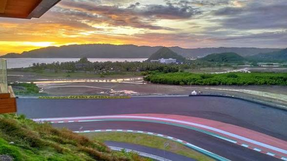
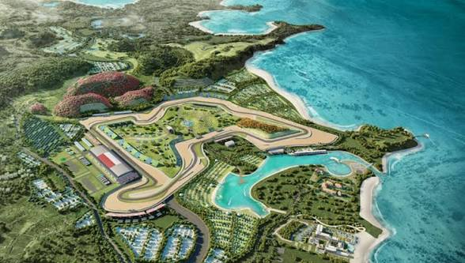
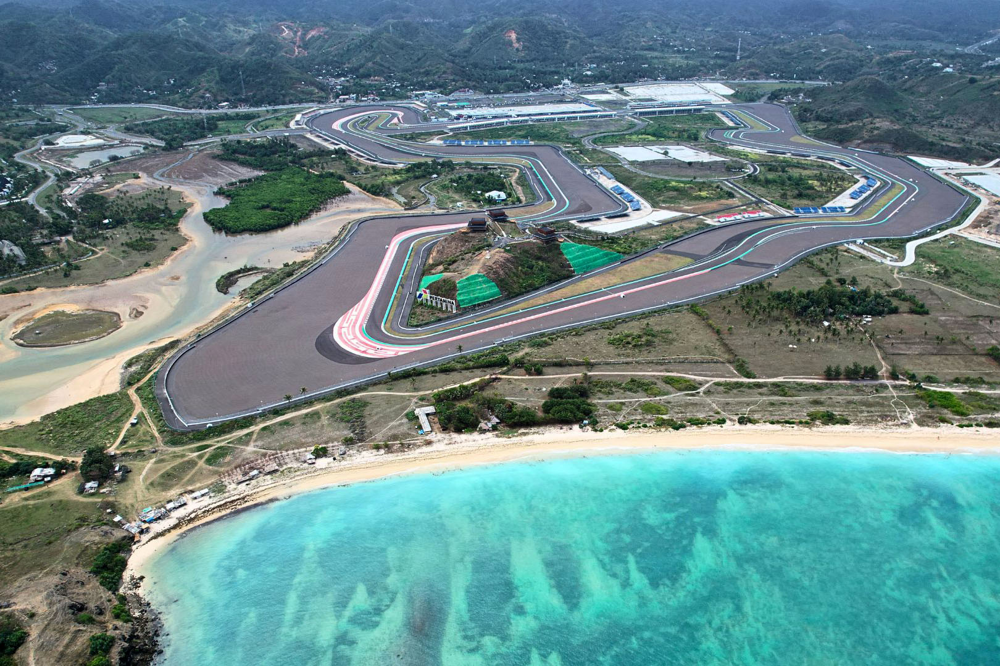

Destinasi Unggulan

Pertamina Mandalika Circuit
Sirkuit jalan raya kelas dunia dengan pemandangan perbukitan hijau.

Bukit Merese
Spot terbaik untuk menikmati sunset yang memukau di tepi laut.
Pantai Kuta Lombok
Pasir putih unik berbentuk butiran merica dan air jernih.
#MandalikaExperience


